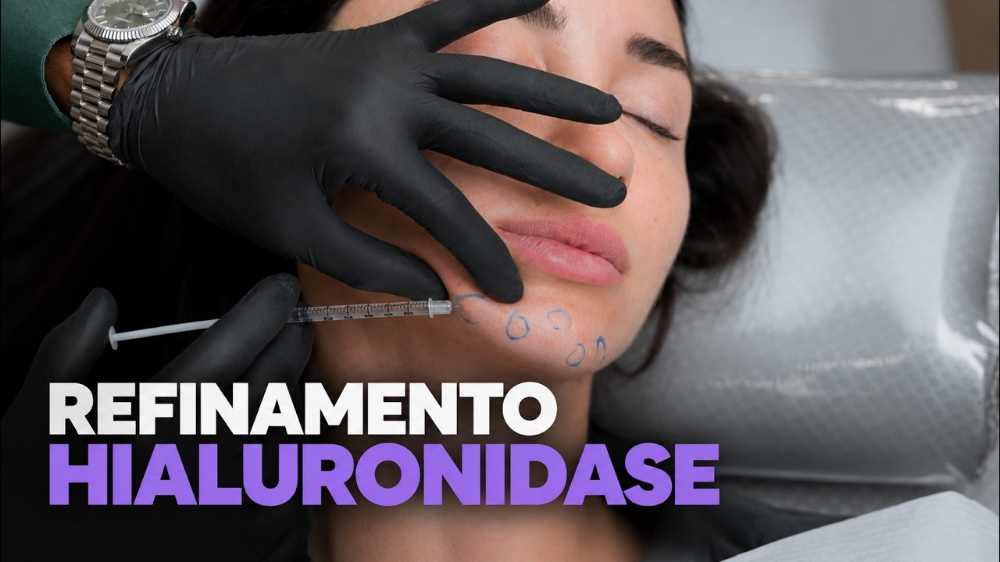
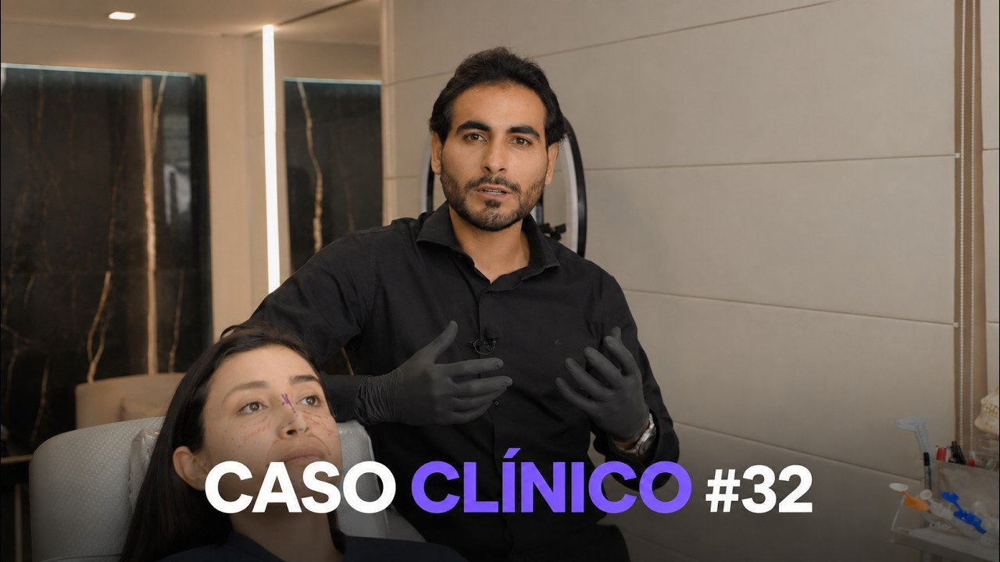

Thumbs do canal · antes e depois
Mesmas imagens que o canal já usa, refeitas com um gancho de curiosidade (e não o nome do procedimento), um ponto de foco anatômico marcado e texto longe do selo de duração. Abaixo de cada par, o porquê da mudança.

Por quê: "Refinamento hialuronidase" só repete o título. "Quando desfazer é a técnica" abre a pergunta (quando?) que só o vídeo responde, e o círculo leva o olho direto para a ponta da agulha.

Por quê: o diferencial do vídeo (a técnica tridimensional) estava escondido no título. Agora é o gancho, e o crop aproxima a região infraorbital, que no original disputava atenção com a mão e o relógio.

Por quê: o texto saiu de cima do rosto (no original cobria boca e queixo) e foi para o lado limpo. "O ponto exato" promete especificidade técnica, que é o que o público profissional procura.

Por quê: no original o Dr. João ocupava um terço do quadro, longe, com o consultório inteiro competindo. Aqui o rosto dele vira o foco (autoridade) e o gancho vende o que um vídeo de 1 hora tem de único: o raciocínio clínico completo.